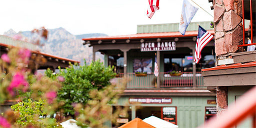
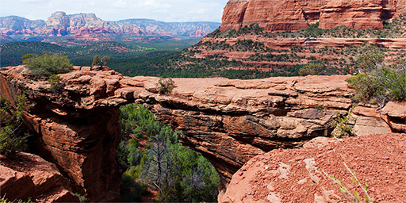

СЕДОНА — небольшой городок в АРИЗОНЕ,
зАСЛУЖИвающий большего!
НАСТОЯЩИЙ ГОРОДОК
— №1 — СЕДОНА НЕ АТРАКЦИОНДЛЯ ТУРИСТОВ, ТАМ
ТЕЧЕТ СВОЯ ЖИЗНЬ

Жилье
Рекомендуем пожитьв настоящем мотеле,
все как в кино!
ЕДА
Всегда заказывайФИРМЕННЫЙ БУРГЕР,
НЕ разочаруетесь!
СУВЕНИРЫ
Не только китайского,но и местного
производства!

ТАМ ЕСТЬ
Мост дьявола
— №1 —
Да, по нему можнопройти! Если конечно
вы осмелитесь
НЕБОЛЬШАЯ ПЛОЩАДЬ
— №1 — ВСЕ достопримеча-тельности находятся
очень близко
КРАСИВАЯ ДОРОГА
— №1 — ЕХАТЬ В СЕДОНУ ИЗЛАС-ВЕГАСА совсем
НЕ СКУЧНО!
МАЛО ТУРИСТОВ
— №1 — Большинство едетв гранд каньон и
толпится там
ЗАИНТЕРЕСОВАЛИСЬ?
Укажите предполагаемые даты поездки
и мы покажем вам лучшие предложения гостиниц в седоне